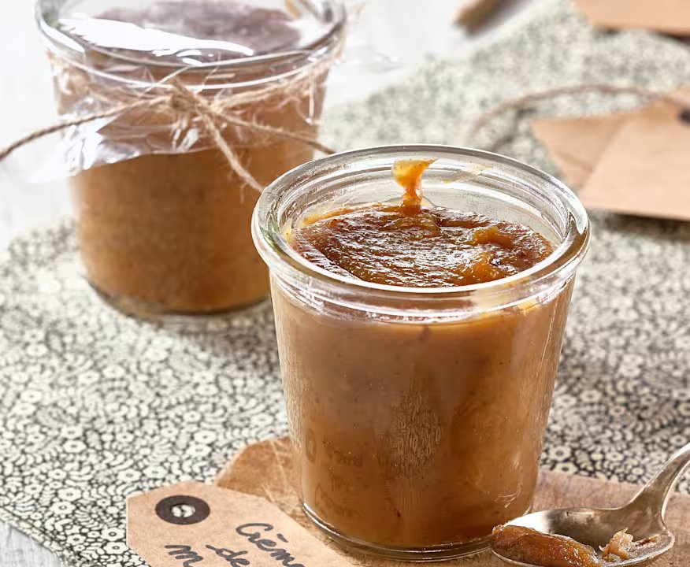

Crème de marrons
Ingredients
3×
- 1 gousse de vanille
- 600 g de sucre roux
- 480 g d'eau
- 960 g de châtaignes cuites et pelées
- 0.5 c. à c. d'agar-agar

Préparation
Étape 1
Fendre 1 gousse de vanille et la couper en deux. La mettre dans le bol avec un tiers de 600 g de sucre roux (200g) et mixer 30 sec/vitesse 10.
Étape 2
Ajouter le reste du sucre et 480 g d'eau, chauffer 10 min/120ºC/vitesse 2.
Étape 3
Ajouter 960 g de châtaignes cuites et pelées et 0.5 c. à c. d'agar-agar (pas plus), puis mixer 1 min 30 sec/vitesse 5.
Étape 4
Cuire 20 min/95ºC/vitesse 3.5. Pendant ce temps, stériliser des pots 10min dans l’eau bouillante.
Étape 5
Mettre en pots aussitôt, fermer et retourner. Conserver au frais à l’abri de la lumière.
Conseils
- Pas de citron (prévu dans la recette d’origine), et peu d’agar-agar sinon la crème devient trop ferme (la recette d’origine en met 1 cac).